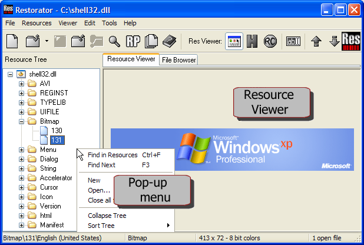

|
Help Overview Manual Tutorials FAQ Purchase Restorator Web |
Restorator
User Interface
User Interface of Restorator

-
Toolbars : Buttons for quick access of the most important functions.
You can arrange the toolbars by clicking on the vertical bar and dragging it to a new position. -
Resource Tree : Displays the open files and their resource trees.
-
Resource Viewer : This panel displays the selected resources.
-
Pop-up menus : Invoke them by clicking with the right mouse button. Pop-up menus offer the most important functions for the item you click on.
-
File Browser : For easy access to files. It works like the Windows Explorer.

The windows remain at a fixed position, only the file browser can be undocked (using the Toolwindow function).